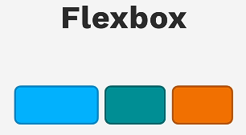
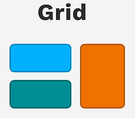

1. Introdução
Cada elemento HTML possui seu próprio layout (formato de seu conteúdo, caixa em que está localizado e como esta mesma caixa é vista pelos demais elementos do documento HTML). Os tipos de display próprio de um elemento podem variar entre ocupar linhas ou blocos inteiros, ou apenas até onde seu conteúdo alcançar.
<div></div><span></span>
<p></p>
1.1. Porque Flexbox e Grid substituem layouts comuns (inline-block, float, etc)?
Com as características dos displays inline, block ou uso do float, torna-se árduo o processo de esquematizar páginas com múltiplas seções e/ou itens dispostos em uma ou mais colunas/linhas. Displays Flexbox e Grid permitem criar layouts robustos, organizados e responsivos de forma rápida e fácil, alinhando itens de N formas, com a aplicação de poucas propriedades características de cada Display.
Utilizando Flex
.flex-container {
// Display Flex alinhando horizontalmente os elementos
display: flex;
// Regras visuais e responsividade
flex-wrap: wrap;
gap: 1rem;
background-color: #ddd;
padding: 1rem;
border-radius: 8px;
margin-bottom: 1rem;
}
Resultado:
Utilizando Inline-Block
.inline-container {
// Regras para alinhar e estender o container
display: inline-block;
width: 100%;
// Regras visuais
background-color: #ddd;
padding: 1rem;
border-radius: 8px;
margin-bottom: 1rem;
}
.inline-item {
// Regras para tamanhos e responsividade
display: inline-block;
width: calc(33.333% - 0.66rem);
margin-right: 0.33rem;
// Regras visuais
background-color: #3498db;
color: white;
padding: 1rem;
text-align: center;
border-radius: 4px;
font-weight: bold;
}
Resultado:
1.2. Diferença entre Flexbox e Grid
Display Flexbox é fortemente indicado para elaborar layouts que dispõem seu conteúdo ao longo de uma única direção (vertical ou horizontal); Fortemente usado para elementos como Navbars (barras de navegação) e menus laterais.
Enquanto isso, Display Grid possui vantagem para alinhar elementos ao longo de duas dimensões simultaneamente, elaborando melhor layouts que se assemelham a “tabelas”, linhas x colunas; Fortemente utilizado para agrupar elementos de diferentes tamanhos em um mesmo layout.
2. Flexbox
2.1. Display: Flex
Aplica conceitos de Flexbox para cada elemento que o container principal ser pai - Todos os elementos filhos terão a largura de seu conteúdo, enquanto o flex-container pai ocupará uma linha inteira, sendo visto como um bloco pelos demais elementos.
.flex-container {
display: flex;
}
2.2. Flex-direction
O Flex-direction define a direção em que os elementos que estão dentro do container flex seguirão para ocupá-lo. Por padrão, respeita o fluxo de leitura comum brasileiro: itens dispostos da esquerda para direita, ocupando uma nova linha imediatamente abaixo da atual, caso precise ser quebrada. propriedade colocada no container-pai.
A direção em linha é chamada de eixo `main` (main-axis) - esquerda para direita, enquanto a direção em coluna é chamada de eixo `cross` (cross-axis) - cima para baixo
→ Valores incluem: row, column.
flex-direction: row
// Valor padrão, faz os elementos do bloco-container-flex se distribuírem em linha
.flex-container {
flex-direction: row;
}
flex-direction: column
// Faz os elementos se distribuírem em coluna, invertendo os eixos
.flex-container {
flex-direction: column;
}
2.3. Justify-content
Define a distribuição dos filhos flex no decorrer do eixo main, com flex-direction padrão em row será no sentido horizontal, se flex-direction column será vertical; propriedade colocada no container-flex-pai; apenas terá aplicação visual se os filhos flex não ocuparem todo o espaço disponível.
→ Valores incluem: flex-start, flex-end, center, space-between, space-around, space-evenly.
justify-content: flex-start
// Alocará todos os filhos flex no começo do eixo main
.flex-container {
justify-content: flex-start;
}
justify-content: flex-end
// Alocará todos os filhos flex no final do eixo main
.flex-container {
justify-content: flex-end;
}
justify-content: center
// Alocará todos os filhos flex no meio do eixo main. Dica: muito bom para centralizar itens verticalmente quando flex-direction column
.flex-container {
justify-content: center;
}
justify-content: space-between
// Alocará o primeiro e o último filho flex nos cantos e os demais com espaçamento igual entre eles
.flex-container {
justify-content: space-between;
}
justify-content: space-around
// Filhos flex terão espaçamento ao redor deles, inclusive o primeiro e o último filho, mas seu espaçamento equivale a metade dos demais
.flex-container {
justify-content: space-around;
}
justify-content: space-evenly
// Aplica espaçamento nos filhos flex, tanto entre si, quanto entre eles e a página, espaçamento igual para todos
.flex-container {
justify-content: space-evenly;
}
2.4. Align-items
Define a distribuição dos filhos flex no decorrer do eixo cross, com flex-direction padrão em row será no sentido vertical, se flex-direction column será horizontal; propriedade colocada no container-flex-pai; apenas terá aplicação visual se os filhos flex não ocuparem todo o espaço disponível. Para alinhar não podemos ter o flex-wrap definido, precisa estar como nowrap
→ Valores incluem: flex-start, flex-end, center, baseline, stretch.
align-items: flex-start
// Alocará todos os filhos flex no começo do eixo cross
.flex-container {
align-items: flex-start;
}
align-items: flex-end
// Alocará todos os filhos flex no final do eixo cross
.flex-container {
align-items: flex-end;
}
align-items: center
// Alocará todos os filhos flex no meio do eixo cross
.flex-container {
align-items: center;
}
align-items: baseline
// Alinha todos os filhos flex de acordo com a linha base do texto
.flex-container {
align-items: baseline;
}
align-items: stretch
// Filhos flex serão esticados até atingir o mesmo tamanho do container pai no eixo cross
.flex-container {
align-items: stretch;
}
2.5. Align-content
Similar ao align-items, no entanto, funciona apenas quando o flex-wrap estiver marcado como wrap; alinha texto da forma que escolhemos quando houver mais de uma linha de acordo com o eixo cross; propriedade colocada no container-flex-pai.
→ Valores incluem: flex-start, flex-end, center, baseline, stretch.
align-content: flex-start
// Alocará todos os filhos flex no começo do eixo cross
.flex-container {
flex-wrap: wrap;
align-content: flex-start;
}
align-content: flex-end
// Alocará todos os filhos flex no final do eixo cross
.flex-container {
flex-wrap: wrap;
align-content: flex-end;
}
align-content: center
// Alocará todos os filhos flex no meio do eixo cross
.flex-container {
flex-wrap: wrap;
align-content: center;
}
align-content: baseline
// Alinha todos os filhos flex de acordo com a linha base do texto
.flex-container {
flex-wrap: wrap;
align-content: baseline;
}
align-content: stretch
// Filhos flex serão esticados até atingir o mesmo tamanho do container pai no eixo cross
.flex-container {
flex-wrap: wrap;
align-content: stretch;
}
2.6. Flex-wrap
Utilizado para quando elementos estão transbordando o eixo horizontal (quando flex-direction row); propriedade utilizada no container-flex-pai.
→ Valores incluem: nowrap, wrap.
flex-wrap: nowrap
// Alocará todos os itens em uma linha infinitamente
.flex-container {
flex-wrap: nowrap;
}
flex-wrap: wrap
// Se um elemento não tiver o espaço mínimo disponível para estar completo em uma linha, automaticamente ocupará a linha seguinte do container flex
.flex-container {
flex-wrap: wrap;
}
2.7. Gap
Aloca espaço entre os filhos flex dentro do container flex, baseado na direção do eixo main. Propriedade utilizada no container-flex-pai.
→ Valores numéricos, pixels, %, rem, em.
gap
// Aloca espaço entre os filhos flex
.flex-container {
gap: 100px;
}
2.8. Flex-Grow
Combinado com flex-basis (flex-basis ditará o valor inicial do elemento, enquanto o flex-grow o fará aumentar seu tamanho ocupando mais porções do pai; se seu tamanho for reduzido de mais, terá o valor estabelecido pelo flex-basis, fazendo os itens “transbordarem da tela” se reduzir de mais); Propriedade aplicada aos filhos flex; seu valor padrão é 0.
→ Valores numéricos.
flex-grow
// Possibilita os filhos flex crescer até ocupar uma X porção do container pai
.flex-item-1 {
flex-grow: 1;
}
.flex-item-2 {
flex-grow: 2;
}
2.9. Flex-Shrink
Propriedade que permite os itens serem comprimidos; Diminui os itens o máximo possível, respeitando o tamanho mínimo do conteúdo. Propriedade aplicada aos filhos flex; Seu valor padrão é 1
→ Valores numéricos.
flex-shrink
// Diminui até que atinjam o valor estabelecido pelo min-width
.flex-item {
flex-shrink: 1;
}
2.10. Flex-Basis
Define o tamanho inicial de um item filho flex baseado no eixo main; Propriedade colocada no filho flex; se combinado com flex-direction row expande a largura dos itens, se combinado com flex-direction column expande a altura dos itens;
→ Valores numéricos.
flex-basis
// Define o tamanho inicial de um item filho flex
.flex-item1 {
flex-basis: 100px;
}
.flex-item2 {
flex-basis: 200px;
}
.flex-item3 {
flex-basis: 300px;
}
2.11. Order
Define a ordem que os filhos aparecem no container flex; Propriedade colocada no filho flex; Por padrão o valor é 0; se todos forem 0 seguirá a ordem listada no HTML
→ Valores numéricos.
order
// Define a ordem de aparição de um filho flex
.flex-item1 {
order: 2;
}
.flex-item2 {
order: 3;
}
.flex-item3 {
order: 1;
}
2.12. Align-self
Serve para aplicarmos um alinhamento diferente em um filho flex, independente de como os demais filhos flex estejam alinhados no container; Propriedade colocada no filho flex; Seus valores envolvem os mesmos de align-items
→ Valores incluem: flex-start, flex-end, center, baseline, stretch.
align-self: flex-start
// Alocará o filho flex no começo do eixo cross
.flex-item {
align-self: flex-start;
}
align-self: flex-end
// Alocará o filho flex no final do eixo cross
.flex-item {
align-self: flex-end;
}
align-self: center
// Alocará o filho flex no meio do eixo cross
.flex-item {
align-self: center;
}
align-self: baseline
// Alinha o filho flex de acordo com a linha base do texto
.flex-item {
align-self: baseline;
}
align-self: stretch
// Filho flex será esticado até atingir o mesmo tamanho do container pai no eixo cross
.flex-item {
align-self: stretch;
}